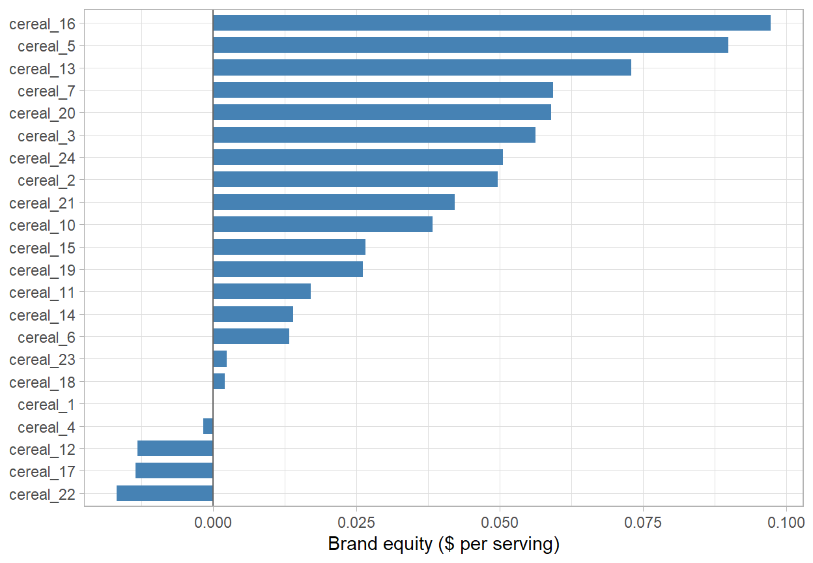

Chapter 71 Branding and Brand Equity
Branding is the single most valuable intangible asset most consumer-facing firms own, and it is also, perhaps surprisingly, one of the cleanest applications of the structural and industrial-organization toolkit developed in this part of the book. A brand is valuable precisely because it shifts behavior: consumers pay more for it, choose it more often, return to it, and forgive its lapses, and rivals must spend to overcome it. Every one of those statements is a statement about a demand system, a dynamic decision, or an equilibrium, which is to say a statement the methods of the preceding chapters are built to estimate. This chapter gathers the literature that takes branding seriously as an economic primitive, spanning the two scholarly traditions that have, largely independently, formalized brand equity: the structural demand and empirical industrial organization tradition in quantitative marketing and economics, and the intangible-capital and asset-pricing tradition in finance. The unifying message is that brand equity is not a marketing abstraction but an estimable structural object, and that the same parameter can be read as consumer willingness to pay, as incremental equilibrium profit, and as a priced intangible asset.
71.1 What Brand Equity Is, Structurally
Across the structural literature, brand equity has a single clean definition: it is the brand-specific component of mean utility in a discrete-choice demand system, the part of consumers’ valuation of a product that survives after observed attributes and price are controlled for. In the random-utility demand models of Chapter 60, a product’s mean utility is decomposed into the effect of its characteristics, the effect of its price, and a residual intercept; when that intercept is indexed by brand, it is the structural measure of brand value, the utility a consumer derives from the brand name as such (Berry 1994; Berry et al. 1995). Dividing the brand intercept by the marginal utility of income, the negative of the price coefficient, converts it into dollars and yields the willingness to pay for the brand, the price premium a consumer would tolerate before switching to an otherwise identical unbranded good. This is the operational definition that the practitioner’s guide to random-coefficients demand estimation makes standard (Nevo 2000a), and it is the one the replication at the end of this chapter implements.
A demand-side intercept is not the whole story, because the value a firm extracts from a brand depends on the competitive environment in which it sells. Goldfarb et al. (2009) make this point precisely, defining brand value as the incremental equilibrium profit attributable to the brand rather than the raw utility intercept, and showing that two brands with identical intercepts can be worth very different amounts depending on the closeness of their competitors and the shape of the demand curve. The distinction matters for any valuation or damages calculation: the object of interest is usually the profit the brand generates in equilibrium, which requires solving the supply side and not merely estimating demand. A further refinement recognizes that brand equity is a state variable a firm invests in over time. Borkovsky et al. (2017) embed the brand intercept in a dynamic model of brand management in which advertising builds the intercept, so that brand value becomes the discounted stream of future equilibrium profits attributable to the brand, the explicit bridge between the static demand intercept and the finance tradition’s notion of brand as capital.
The finance tradition reaches the same object from the asset side. There, brand equity is a stock, brand or goodwill or customer capital, accumulated through advertising and past consumption, depreciating slowly, and priced like any other productive asset (Belo et al. 2014; Gourio and Rudanko 2014). The two views are reconciled by the observation that the demand-side intercept is the flow return on the finance-side stock: the brand capital a firm has accumulated is what generates the mean-utility premium consumers pay each period. The remainder of the chapter develops both readings, beginning with the demand-side measurement that defines the field.
71.2 Measuring Brand Equity from Demand
The empirical workhorse for brand-equity measurement is the random-coefficients logit demand model estimated on market-level scanner data, the BLP apparatus of Chapter 60. Its application to ready-to-eat cereal is the canonical case: Nevo (2001) estimates brand-level demand with brand and brand-by-time fixed effects, recovers marginal costs from the pricing first-order conditions, and decomposes the resulting markups, and the estimated brand intercepts are a direct empirical measure of what consumers pay for the brand itself. Because brands sustain prices well above marginal cost, the exercise simultaneously measures brand equity and market power, and the same machinery supports the merger simulations discussed below. The estimation recipe, efficient GMM with a contraction mapping and cost-shifter or competitor-characteristic instruments for the endogenous price, is the standard that essentially all later brand-equity work follows (Nevo 2000a).
Three extensions sharpen the measurement. First, the value a brand commands depends on the equilibrium, not the intercept alone, so brand value is properly measured as incremental profit in a demand-and-supply system (Goldfarb et al. 2009), and recent work shows the brand can affect marginal cost as well as demand, so that ignoring the cost channel biases the estimated profit premium (Sandor et al. 2024). Second, the standard model assumes consumers know every product, yet much of measured brand strength is really awareness: when advertising determines which products enter a consumer’s choice set, a limited-information demand model attributes part of the apparent brand preference to who knows the brand exists, and ignoring this awareness friction badly biases both brand preferences and markups (Goeree 2008). Third, brand equity is dynamic, an accumulated and depreciating state that firms manage through investment, so the static intercept is best understood as the current level of a capital stock whose evolution the dynamic model traces (Borkovsky et al. 2017). Together these refinements move brand-equity measurement from a single demand regression toward a full structural account of how the brand is built, what it costs, and what it earns.
71.3 Advertising, Goodwill, and Brand Capital Dynamics
If brand equity is a stock, advertising is the investment that builds it, and the formalization is old and durable. The goodwill-capital model of Nerlove and Arrow (1962) treats advertising as investment in a depreciating goodwill stock that shifts current and future demand, and derives the optimal advertising-to-sales ratio; essentially every later brand-capital formulation, in marketing and in finance alike, is a descendant of this model. The modern structural literature estimates the goodwill production function and the firm’s dynamic advertising policy jointly. An influential dynamic model with a goodwill stock and an S-shaped advertising response rationalizes the otherwise puzzling practice of advertising in bursts, or pulsing, as the optimal policy of a firm facing threshold returns (Dube et al. 2005), and related work identifies the goodwill production function from high-frequency advertising data and finds goodwill to be the dominant driver of advertising intensity (Doganoglu and Klapper 2006). In a strategic setting, a computable dynamic game distinguishes goodwill advertising, which shifts preferences, from awareness advertising, which shifts reach, and shows that persistent brand asymmetries can arise under either, with the uncomfortable implication that advertising restrictions can be anticompetitive (Doraszelski and Markovich 2007).
A parallel strand asks what advertising actually does to consumers, because the answer determines what brand equity is made of. Advertising may inform consumers of a product’s existence or attributes, build a prestige or image association, or signal unobserved quality. Border-discontinuity and field-experimental designs have made these channels separately identifiable: advertising of a new experience good appears to work mainly by informing rather than by prestige (Ackerberg 2001, 2003); in the banking industry advertising operates largely as an awareness shifter that benefits smaller firms and intensifies competition (Honka et al. 2017); prescription-drug advertising generates category-expanding spillovers that lead firms to underinvest because they free-ride on rivals’ demand creation (Shapiro 2018); and a disclosure experiment in search advertising isolates a genuine quality-signaling channel, with ads raising valuations even after controlling for information (Sahni and Nair 2020). A sobering recent contribution estimating advertising effects across 288 brands finds elasticities far smaller than the older literature claimed, often statistically indistinguishable from zero, implying that many firms over-invest at the margin (Shapiro et al. 2021). The consistent lesson is that the brand capital advertising builds is real but smaller and more channel-specific than folklore suggests, which is exactly why structural measurement matters. The investment view also connects directly to firm value: modeling advertising as investment in a brand or goodwill stock recovers the depreciation rate and returns to advertising and links advertising spending to stock returns and firm value (Vitorino 2014), the natural hinge to the finance tradition developed below.
71.4 State Dependence, Brand Loyalty, and Switching Costs
Brand shares are strikingly persistent, and a central methodological problem is to separate the part of that persistence that reflects durable brand capital, true loyalty or switching costs, from the part that merely reflects stable but heterogeneous tastes. The distinction is not pedantic: only genuine state dependence implies that a temporary intervention, a promotion or a stockout, has lasting effects on future demand. The canonical decomposition shows that, even after allowing for rich preference heterogeneity, a component of genuine structural state dependence survives in scanner-panel choice data (Keane 1997), and the most careful structural treatment separates loyalty from search and from learning as competing explanations for consumer inertia, finding the data consistent with loyalty while rejecting the search and learning alternatives (Dube et al. 2010). The competitive implications are subtle and counterintuitive. Switching costs are usually presumed to soften competition, yet a dynamic structural model of price competition with realistic switching costs finds that equilibrium prices can be substantially lower than without them, because forward-looking firms compete aggressively to capture customers whose future business is then locked in (Dube et al. 2009). Switching costs are also a first-order force outside consumer goods: in health insurance, structurally estimated switching costs are large enough that policies reducing inertia can worsen adverse selection, a cautionary tale for the casual reading of loyalty as unambiguously good (Handel 2013). An alternative micro-foundation treats persistence as the outcome of gradual Bayesian learning about brands, and a careful assessment of that program clarifies when learning, rather than loyalty, is the right account (Ching et al. 2013).
71.6 Brand, Market Structure, and Mergers
Because brand equity is market power in differentiated-products form, the structural demand estimates that measure it are exactly the inputs that antitrust analysis requires. The template is brand-level merger simulation: estimate random-coefficients demand over branded products, recover marginal costs from the pricing first-order conditions, change the ownership matrix to reflect the merger, and solve for the new equilibrium prices, an exercise first carried out for ready-to-eat cereal (Nevo 2000b) and now standard practice. The approach has repeatedly detected post-merger price effects that exceed the static Nash-Bertrand prediction, evidence of coordinated conduct among differentiated brands, as in the analysis of the MillerCoors joint venture (Miller et al. 2017a) and the subsequent price-leadership account of the beer industry in which mergers raise margins by relaxing the incentive constraints that sustain tacit collusion (Miller et al. 2021). The brand-and-markups question also sits at the center of the macro debate over rising market power, where production-function markup estimation finds aggregate markups rising sharply over four decades, concentrated in the upper tail of firms (De Loecker et al. 2020). On the entry side, firms choose brand and product positioning strategically, trading off demand against the competition their position invites, a calculus that structural entry games with endogenous product-type choice make estimable (Seim 2006). In each case brand equity is not a fixed endowment but an object shaped by, and shaping, market structure.
71.7 The Persistence and Formation of Brand Preferences
Perhaps the most striking fact about brands is how extraordinarily persistent their fortunes are, and a body of work has turned that persistence into evidence about the nature of brand capital. Early-mover brands retain dominant local shares for generations, with a pronounced geographic gradient tied to a brand’s city of origin, a pattern that contemporaneous prices and distribution cannot explain and that points to accumulated local brand capital (Bronnenberg et al. 2009). The cleanest identification comes from consumer migration: households that move between cities carry their old brand preferences with them and converge only partially and very slowly to the brand shares of their new location, with roughly sixty percent of the gap persisting and effects detectable decades after the move (Bronnenberg et al. 2012). A structural brand-capital model fit to these migration patterns implies that brand preferences are durable, slowly depreciating state variables built from past consumption and exposure, and that this accumulated capital explains a large share of the cross-market variation in brand shares. The synthesis of this program frames brand preference as a stock formed over a lifetime from consumption, advertising, and information, the demand-side counterpart of the finance tradition’s brand capital and the best single statement of why brands are so hard to build and so hard to dislodge (Bronnenberg and Dube 2017).
71.8 Brand Capital and Intangibles in Finance
The finance literature treats brand equity as one of a family of intangible capital stocks that increasingly dominate firm value, and it brings the asset-pricing and corporate-finance toolkit to bear. The foundational structural treatment models brand capital as a productive stock accumulated through advertising and shows it to be large relative to physical capital, helpful in matching firm-value and investment moments, and consequential for the returns of advertising-intensive firms (Belo et al. 2014). Brand and customer intangibles have first-order corporate-finance implications: firms with stronger brand perception enjoy more stable cash flows and demand, which supports higher leverage and shapes payout policy (Larkin 2013), and a structural decomposition of firm value attributes quantifiable shares of market value to brand and knowledge capital across industries (Belo et al. 2022). These exercises build on a measurement literature that capitalizes intangibles from financial statements, from the national-accounts treatment of business intangibles (Corrado et al. 2009) to firm-level constructions of organization capital from accumulated overhead, which is priced in the cross-section of returns (Eisfeldt and Papanikolaou 2013), to the now-standard capitalization of research and a fraction of selling and administrative spending that strengthens the investment-q relation (Peters and Taylor 2017) and, properly accounted for, revives the value premium (Crouzet and Eberly 2023).
A second finance strand recasts asset pricing itself in the language of demand estimation, the same language used to measure brand equity. The demand-system approach to asset pricing estimates a characteristics-based demand for securities and lets investors’ demand for characteristics, rather than cash-flow betas alone, determine prices, the asset-market analog of the BLP demand system (Koijen and Yogo 2019), with extensions identifying which investors most move valuations and returns (Koijen et al. 2024). Closest to branding is the customer-capital literature, which models the slow accumulation of a customer base through costly marketing under search frictions; customer capital makes firms behave as if they faced adjustment costs, links the customer base to markups and valuation (Gourio and Rudanko 2014), and, when it is inalienable and at risk in a downturn, raises precautionary cash holdings and is priced in stock returns (Dou et al. 2021). The throughline is that the brand and customer relationships a firm builds on the demand side are, on the finance side, intangible assets whose measurement, valuation, and risk are now central to understanding corporate investment and the cross-section of returns.
71.9 Replication: Measuring Brand Equity in the Cereal Market
We make the central definition concrete by estimating brand equity directly. The exercise fits a logit demand model with brand fixed effects to the ready-to-eat cereal data that ship with the BLPestimatoR package, the same Nevo (2001) data used in Chapter 60. The Berry inversion turns the demand model into a linear regression of the log share ratio on price and characteristics, and the brand fixed effects from that regression are the brand intercepts, the structural measure of brand value. Price is endogenous, so it is instrumented with the cost-shifter instruments Nevo constructs.
library(BLPestimatoR)
library(AER)
data("productData_cereal")
cereal <- productData_cereal
# Berry (1994) inversion: the outside share per market and the log-share dependent variable.
cereal$s0 <- ave(cereal$share, cereal$cdid, FUN = function(s) 1 - sum(s))
cereal$y <- log(cereal$share) - log(cereal$s0)# Logit demand with brand fixed effects; price instrumented by Nevo's cost shifters.
iv_formula <- as.formula(paste(
"y ~ price + sugar + mushy + factor(product_id) |",
"sugar + mushy + factor(product_id) +", paste0("IV", 1:20, collapse = " + ")))
logit_fit <- ivreg(iv_formula, data = cereal)
# Marginal utility of income (the negative price coefficient) sets the dollar scale.
alpha <- -coef(logit_fit)[["price"]]
# Brand equity = brand intercept expressed in dollars per serving (utils / alpha).
fe <- coef(logit_fit)[grep("product_id", names(coef(logit_fit)))]
brand_equity <- data.frame(
brand = sub("factor\\(product_id\\)", "", names(fe)),
equity = as.numeric(fe) / alpha
)
# The omitted brand is the reference point at zero.
brand_equity <- rbind(brand_equity, data.frame(brand = "cereal_1", equity = 0))
brand_equity <- brand_equity[is.finite(brand_equity$equity), ]
brand_equity <- brand_equity[order(brand_equity$equity), ]The price coefficient is -30.1, so consumers are highly price sensitive in this category, and the estimated brand equities, the brand intercepts converted to dollars, range across the brands as Table 71.1 and Figure 71.1 show.
extremes <- rbind(utils::head(brand_equity, 4), utils::tail(brand_equity, 4))
knitr::kable(
data.frame(Brand = extremes$brand, `Brand equity ($/serving)` = round(extremes$equity, 3),
check.names = FALSE),
row.names = FALSE,
caption = "Estimated brand equity for the lowest- and highest-valued cereal brands, measured as the brand intercept from a logit demand model divided by the marginal utility of income. Values are dollars per serving relative to the omitted reference brand."
)| Brand | Brand equity ($/serving) |
|---|---|
| cereal_22 | -0.017 |
| cereal_17 | -0.013 |
| cereal_12 | -0.013 |
| cereal_4 | -0.002 |
| cereal_7 | 0.059 |
| cereal_13 | 0.073 |
| cereal_5 | 0.090 |
| cereal_16 | 0.097 |
library(ggplot2)
ggplot(brand_equity, aes(x = reorder(brand, equity), y = equity)) +
geom_col(fill = "steelblue", width = 0.7) +
geom_hline(yintercept = 0, color = "grey40") +
coord_flip() +
labs(x = NULL, y = "Brand equity ($ per serving)")
Figure 71.1: Estimated brand equity across the cereal brands, measured as the brand-specific mean-utility intercept converted to dollars per serving. The spread is the brand-equity distribution: consumers will pay materially more for the strongest brands than for the weakest, holding sugar, mushiness, and price fixed.
The estimated equities are modest in absolute terms, a few cents per serving, but cereal sells for only a few cents per serving, so the strongest brands command a premium that is large relative to price, exactly the brand power that sustains the markups Nevo documents. The exercise is deliberately simple, a plain logit rather than the full random-coefficients model, but it isolates the essential idea: brand equity is the brand-specific intercept of a demand system, it is identified from choices once price endogeneity is handled, and it is naturally expressed in dollars of willingness to pay. The full random-coefficients estimation of Chapter 60 refines these numbers and lets the brand valuations vary across consumer types, and an equilibrium treatment would convert them into the incremental profit that is the right object for valuation and damages (Goldfarb et al. 2009).
71.10 Real-World and Expert-Witness Applications
Structural brand-equity estimates are not merely academic. Brand valuation is a recurring problem in mergers and acquisitions, where the price paid for a target is largely payment for its brands, and in trademark and brand-licensing disputes, where a royalty rate must be tied to the incremental profit the brand generates rather than to an accounting figure. The demand-and-supply estimate of incremental brand profit is precisely the quantity these disputes turn on (Goldfarb et al. 2009), and the same merger-simulation machinery that estimates brand equity is the evidentiary standard in antitrust review of mergers between branded-goods producers (Nevo 2000b; Miller et al. 2017a). In intellectual-property and false-advertising litigation, the informational component of the brand premium, the part that would disappear if consumers were fully informed, is the natural measure of consumer harm and of damages (Bronnenberg et al. 2015). On the management side, the advertising-effectiveness estimates that discipline brand investment determine marketing budgets and their defense to boards and investors, and the recent finding that average advertising elasticities are small and many firms over-invest is a direct input to that decision (Shapiro et al. 2021). In finance and accounting, the capitalization of brand and other intangibles increasingly drives reported firm value, equity valuation, and the cost of capital, so the measurement choices reviewed here have consequences well beyond the marketing department (Peters and Taylor 2017; Belo et al. 2022).
71.11 Connections
This chapter is an application of the whole structural cluster rather than a new method. Brand equity is measured with the discrete-choice and random-coefficients demand estimators of Chapter 60; its dynamics are governed by the goodwill-capital and dynamic-game logic of Chapters 61 and 62; its identification rests, as always, on credible instruments for the endogenous price and advertising; and its finance incarnation as brand and customer capital connects to the structural finance of Chapter 72 and the production-function and markup estimation of the markups-and-mergers material. What branding adds is a vivid demonstration that a single structural parameter, the brand intercept, simultaneously answers a marketing question about willingness to pay, an industrial-organization question about market power, and a finance question about intangible asset value, which is why the topic sits naturally at the meeting point of the three literatures.